1096年、セルジューク朝がキリスト教の聖地イェルサレムを奪い、巡礼を妨げていたため、ローマ教皇ウルバヌス2世
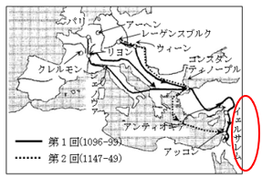 ウルバヌス2世（在位1088〜1099）
11世紀のローマ教皇。1095年にフランスのクレルモンで行った演説で、聖地エルサレム奪還のための遠征を呼びかけました。十字軍の出発点となった人物です。
は十字軍を派遣しました。
ウルバヌス2世（在位1088〜1099）
11世紀のローマ教皇。1095年にフランスのクレルモンで行った演説で、聖地エルサレム奪還のための遠征を呼びかけました。十字軍の出発点となった人物です。
は十字軍を派遣しました。
約200年間に7回ほどの遠征を行いましたが、初回のみ勝利し、以後はことごとく敗れ撤退しました。その結果、教皇の権威は失墜し、カトリック教会への批判が高まりました。
一方、十字軍の遠征路沿いのイタリアでは経済が発展し、アジアとの東方貿易が盛んになりました。
カトリック教会がこれまで抑えてきた人間性の自由を求めて、古代ローマ・ギリシャの古典文化を模範とする芸術や文化が復興しました。これをルネサンス（文芸復興）といいます。
文学では、人間性の自由・解放を求め個人を尊重するヒューマニズム（人文主義）が発達しました。
| 作者 | 作品 | 内容 |
|---|---|---|
|
ダンテ
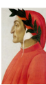 ダンテ（1265〜1321） イタリアの詩人。代表作「神曲」は、暗い森に迷い込んだダンテが古代ローマの詩人に案内されて地獄・煉獄・天国を旅する壮大な詩です。イタリア語で書かれた初期の傑作です。 | 神曲 | 暗い森に迷い込んだダンテが古代ローマの詩人に導かれ地獄・天国を旅する話です。 |
|
エラスムス
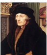 エラスムス（1466〜1536） オランダ出身の人文主義者。著書で当時のカトリック教会や聖職者の堕落を鋭く風刺しました。ルターの宗教改革にも大きな影響を与えた知識人です。 | （随筆） | 当時の教会や聖職者への痛烈な風刺批判を述べています。 |
|
セルバンテス
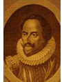 セルバンテス（1547〜1616） スペインの作家。「ドン＝キホーテ」は、騎士物語を読みすぎて自分が騎士だと思い込んだ男の冒険譚。近代小説の原点ともいわれる名作です。 |
ドン＝キホーテ
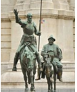 🖼 作品 | 騎士物語を読みすぎた男が自分を騎士と思い込み旅をする話です。 |
|
シェークスピア
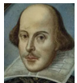 シェークスピア（1564〜1616） イギリスの劇作家・詩人。「ヴェニスの商人」「ハムレット」「ロミオとジュリエット」など多くの名作を残し、今も世界中で上演されています。英語文学最大の作家とされています。 | ヴェニスの商人 | イタリアの商人アントーニオを主人公とした喜劇です。 |
| 芸術家 | 主な作品 |
|---|---|
レオナルド＝ダ＝ヴィンチ
 レオナルド＝ダ＝ヴィンチ（1452〜1519）
イタリアのルネサンスを代表する天才。画家・彫刻家・建築家・科学者・発明家など多才な分野で活躍しました。「モナ＝リザ」「最後の晩餐」が代表作です。
レオナルド＝ダ＝ヴィンチ（1452〜1519）
イタリアのルネサンスを代表する天才。画家・彫刻家・建築家・科学者・発明家など多才な分野で活躍しました。「モナ＝リザ」「最後の晩餐」が代表作です。
|
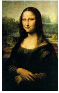 🖼 モナ＝リザ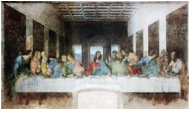 🖼 最後の晩餐 |
ミケランジェロ
 ミケランジェロ（1475〜1564）
イタリアの天才芸術家。彫刻「ダヴィデ像」やシスティーナ礼拝堂の天井画「最後の審判」が有名です。人体の美しさを徹底的に追求した彫刻は、今も見る人を圧倒します。
ミケランジェロ（1475〜1564）
イタリアの天才芸術家。彫刻「ダヴィデ像」やシスティーナ礼拝堂の天井画「最後の審判」が有名です。人体の美しさを徹底的に追求した彫刻は、今も見る人を圧倒します。
|
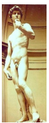 🖼 ダヴィデ像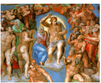 🖼 最後の審判 |
| ボッティチェリ | ヴィーナスの誕生 |
| ラファエロ | 小椅子の聖母 |
これらの芸術家はイタリアの富豪メディチ家やローマ教皇・各国国王などに保護されました。
| 技術 | 内容 |
|---|---|
| 羅針盤の改良 | 夜の星座を見ずに、昼夜通して帆船での航海が可能になりました。大航海時代を支えた重要な技術です。 |
| 火薬の改良 | 10世紀ごろ中国で発明されました。ヨーロッパでは鉄砲・砲弾の発射用に使われ、戦争のやり方を大きく変えました。 |
| 活版印刷術の改良 | ドイツ人のグーテンベルク
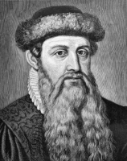 グーテンベルク（1400頃〜1468） ドイツの発明家。活版印刷機を発明し、聖書を大量印刷することに成功しました。この技術のおかげで本が安く普及し、ルターの宗教改革の広がりにも大きく貢献しました。 が発明・発展させました。本が安く大量に作れるようになり、知識が広まりました。 |
科学革命では、コペルニクス
 コペルニクス（1473〜1543）
ポーランドの天文学者。当時の常識だった「地球が宇宙の中心」という天動説を否定し、「太陽が中心」という地動説を唱えました。教会の反発を恐れ、死の直前まで出版をためらいました。
（ポーランド人）が地動説を唱え、ガリレオ＝ガリレイ
コペルニクス（1473〜1543）
ポーランドの天文学者。当時の常識だった「地球が宇宙の中心」という天動説を否定し、「太陽が中心」という地動説を唱えました。教会の反発を恐れ、死の直前まで出版をためらいました。
（ポーランド人）が地動説を唱え、ガリレオ＝ガリレイ
 ガリレオ＝ガリレイ（1564〜1642）
イタリアの物理学者・天文学者。自作の望遠鏡で天体を観測し地動説を証明しようとしましたが、ローマ教会の異端審問所に呼ばれ、自説を撤回させられました。「それでも地球は動く」という言葉が有名です。
（イタリア人）が望遠鏡で天体観測し地動説を主張しました。しかしローマ教会の異端審問所にかけられ、自説を放棄しました。
ガリレオ＝ガリレイ（1564〜1642）
イタリアの物理学者・天文学者。自作の望遠鏡で天体を観測し地動説を証明しようとしましたが、ローマ教会の異端審問所に呼ばれ、自説を撤回させられました。「それでも地球は動く」という言葉が有名です。
（イタリア人）が望遠鏡で天体観測し地動説を主張しました。しかしローマ教会の異端審問所にかけられ、自説を放棄しました。
フィレンツェの政治家マキアヴェリ
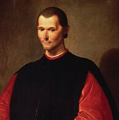